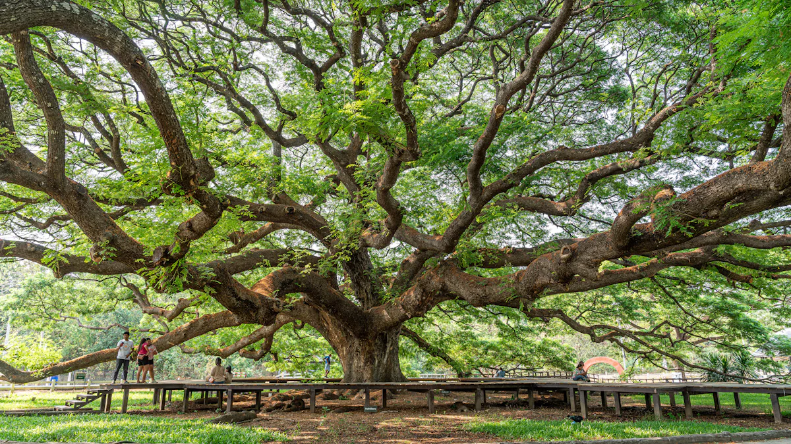

When a road is widened, mature trees are often in the way. Cutting them down is quick, but the city loses decades of shade, and projects often face delays and public objections. Moving the trees solves this: the road gets built and the trees live on nearby. Here is how it works, and what decides whether a moved tree survives.

Which trees can be moved?
Not every tree can be moved. First we survey each tree and note its type, trunk size, health and whether machines can reach it. Fig trees such as peepal, banyan and pilkhan usually recover well. Trees with a deep main root, and trees that are sick, hollow or leaning, are harder to move. We also check the new site. It needs space, good soil and a water supply.
When is the best time to move a tree?
In north and central India, the monsoon is usually the best time. The air is humid, so the tree loses less water while its roots recover. Peak summer is the worst time. Work starts weeks before the move. We water the tree deeply and cut back its branches, so there are fewer leaves to feed. We also cut the roots around the future root ball in stages, so the tree grows new small roots inside it.
How is a big tree dug out and lifted?
The root ball is sized to the trunk. The bigger the tree, the bigger and heavier the ball. We dig it out carefully, wrap it in hessian cloth and tie it, so the soil stays tight around the roots. Cranes and earth-movers then lift the tree onto a trailer. The aim is to keep the root ball whole and to replant the tree as fast as possible, ideally on the same day.
Plan tree moving into your construction schedule early. The survey and root work take weeks, and the best season may not match your earthwork dates.
How is the tree replanted?
We dig the new pit wider than the root ball, with good drainage and better soil. The tree goes in at the same depth and, where possible, facing the same way as before. Then we tie it with wires or stakes, so the wind cannot rock it while new roots grow.
What decides whether the tree survives?
Most of the work happens after the move. For the first year, the tree needs regular watering, root treatment, protection from fungus and pests, and regular checks. New leaves are the first sign that it has taken. Survival is also a contract issue. For example, Delhi's 2020 tree transplantation policy says at least 80% of moved trees must survive. Other states and project owners set their own conditions, so check what your contract asks for.
Our work on NH-307
On the NH-307 road-widening project, Laavin Infrascapes moved 155 mature roadside trees for NHAI. We followed the steps above and worked around the road contractor's schedule.
Have Trees in the Way of Your Project?
Send us the site location and an approximate tree count. We'll survey the trees and come back with a feasibility report and an itemised estimate.
Book a Site Visit ↗